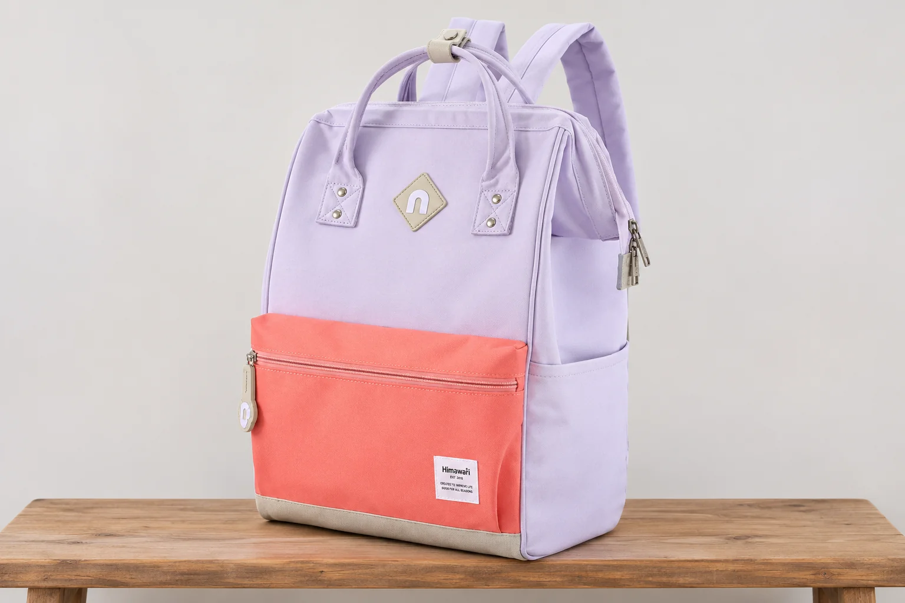
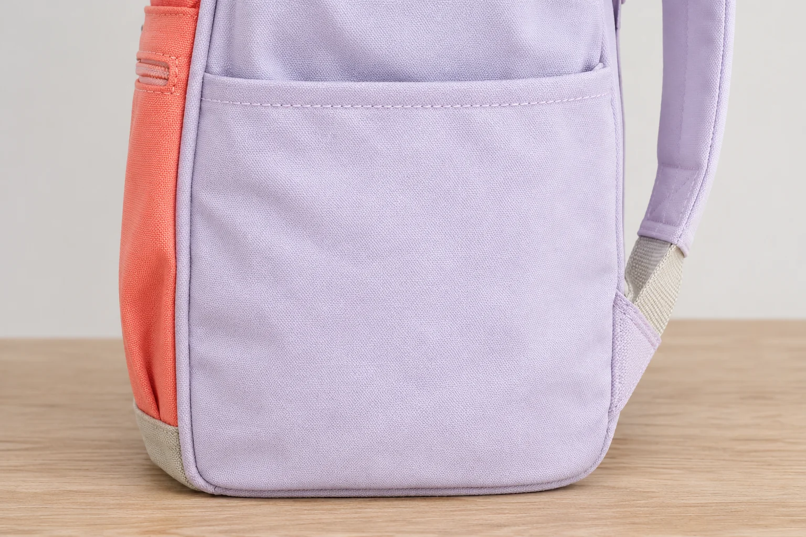
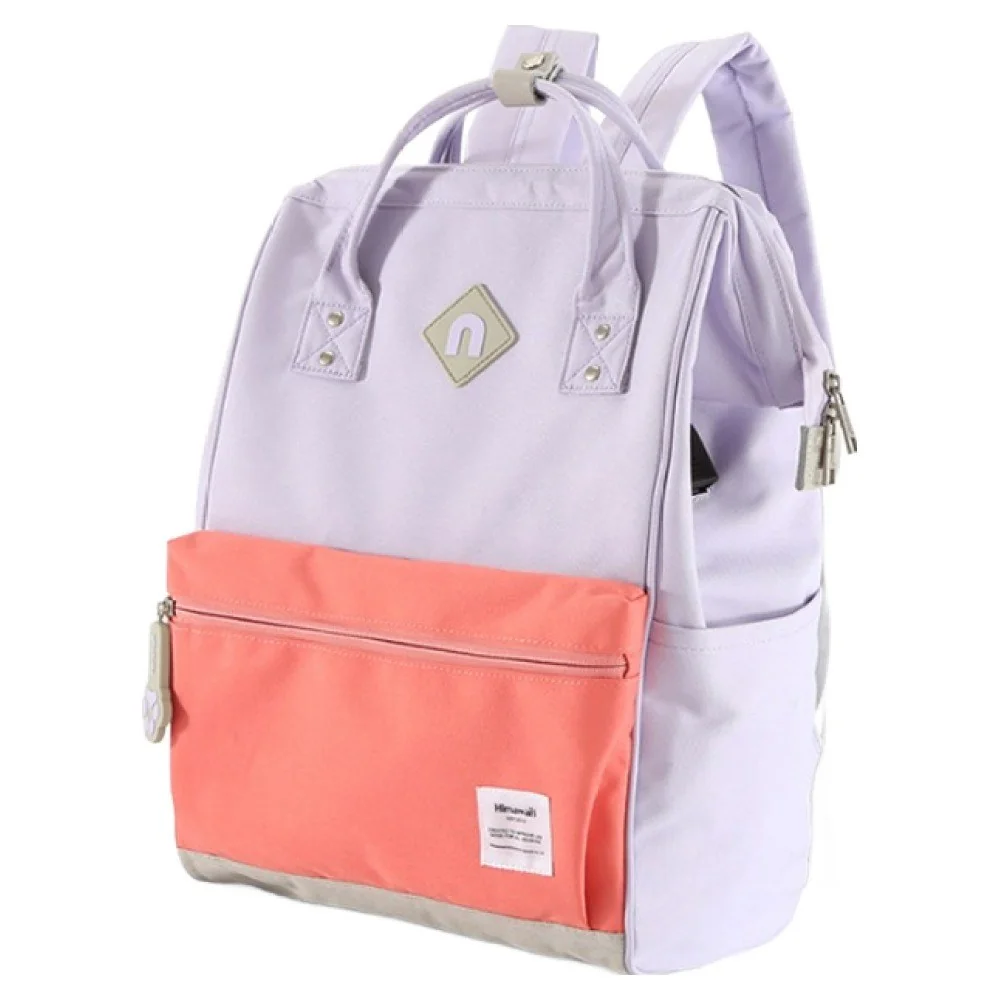

백팩을 내려놓을 때 옆주머니 끝은 바닥에서 얼마나 떨어져 있을까

현관에서 백팩을 내려놓을 때 대개 손이 먼저 닿는 곳은 위 손잡이입니다. 눈은 손잡이나 앞주머니를 따라가기 쉽지요. 옆주머니가 볼록해지는 날에는 시선을 조금 아래로 옮겨 보세요. 가방 바닥이 먼저 닿는지 보세요. 옆으로 나온 물건이나 주머니 아래쪽이 먼저 눌릴 수도 있습니다. 같은 옆주머니를 써도 들고 걷는 동안과 내려놓는 순간에 보는 자리는 다릅니다. 내려놓기를 자주 하는 자리에서 그 차이를 알아두면 주머니를 어느 정도까지 채워 쓸지 판단하기 편해집니다.
빈 가방을 처음 내려놓는 순간
No.9004 연보라의 실제 제품 사진에는 코랄색 앞주머니 옆으로 연보라 옆주머니가 보입니다. 앞쪽에는 코랄색 포켓 아래로 밝은 바닥띠가 드러납니다. 사진 오른편의 옆주머니 면은 바닥 모서리 가까이까지 이어집니다. 앞면과 옆면이 만나는 선을 따라 아래로 시선을 옮겨 보세요. 옆주머니가 어느 높이에 붙어 있는지도 보입니다. 카탈로그에는 이 제품의 외부 크기가 가로 28cm, 세로 40cm, 폭 17cm로 적혀 있습니다. 옆주머니 아래쪽과 바닥의 간격이 궁금하다면 이 숫자와 별도로 실제 옆모습을 살펴야 합니다.
빈 가방을 평평한 선반이나 벤치에 손으로 받쳐 세워 보세요. 발밑에서 볼 때보다 눈높이에 가까워져 가방이 바닥면과 만나는 선을 따라가기 쉽습니다. 정면에서는 앞쪽의 색띠와 실제로 선반에 닿는 면이 겹쳐 보일 수 있습니다. 가방을 들지 않은 채 시선을 옆으로 옮겨 보세요. 옆에서 보면 바닥 천이 꺾이는 모서리와 옆주머니 아래 봉제선이 각각 어느 높이에 있는지 확인하기 좋습니다. 손잡이를 놓았을 때 몸판이 부드럽게 기울어진다면 손바닥을 앞면에 가볍게 대고 세운 상태에서도 한번 보세요.

물건을 담으면 어디부터 달라질까
옆주머니에 넣은 물건은 겉에서 본 주머니 모양과 다른 자리에 놓일 수 있습니다. 크기가 비슷해도 바닥이 둥근 물건은 살짝 돌아가고 모서리가 있는 물건은 한쪽 봉제선 근처에 기대기도 합니다. 이 차이는 주머니를 손으로 억지로 벌렸을 때보다 평소처럼 물건을 넣고 백팩을 똑바로 들었을 때 보기 쉽습니다. 확인에는 평소 쓰는 가벼운 소지품으로 충분합니다. 가방을 몸에 멘 채 확인하기 어렵다면 거울 옆에 서 보세요. 손잡이를 잡아 테이블 위에서 가방을 잠시 들어 올리면 옆선도 볼 수 있습니다.
옆주머니에 물건을 넣은 뒤 다시 내려놓을 때는 손잡이를 쥔 채 속도를 늦춰 봅니다. 주머니가 아래쪽에서 먼저 눌리면 그 자리가 부풀어 오르거나 옆으로 밀리는 모습이 나타날 수 있습니다. 눈으로 확인하기 어렵다면 가방 바닥이 닿자마자 손을 놓는 대신 잠시 받친 상태를 유지한 뒤 옆에서 볼 수 있습니다. 손으로 주머니를 밑에서 받쳐 물건을 밀어내면 평소의 위치가 바뀌므로 그대로 두세요. 주머니 아래가 닿는지 여부는 넣은 물건과 그날 본체에 든 짐에 따라 다시 달라질 수 있습니다.

손잡이를 잡고 낮출 때와 한쪽 어깨에서 내릴 때
잠깐 들어 벤치에 놓을 때는 가방을 수직으로 낮추기 쉽습니다. 통로에서 한쪽 끈을 벗고 바닥에 내릴 때는 몸 가까운 쪽이 먼저 내려가면서 가방이 살짝 기울어집니다. 이 두 방식에서 옆주머니의 위치는 그대로지만 바닥과 가까워지는 순서는 달라집니다. 짐이 가벼운 날에는 가방을 자주 놓는 벤치나 집의 낮은 선반에서 두 방식을 천천히 비교해 보세요. 바닥에 놓을 때 옆이 먼저 눌린다면 가방을 잠시 세워 내려놓거나 옆주머니에 넣는 물건의 방향을 바꿔 볼 수 있습니다.
선반 폭도 함께 살펴보면 놓을 자세를 고르기 쉽습니다. 넓은 선반에는 가방 바닥의 양쪽을 모두 올려놓을 수 있습니다. 공간이 넓어도 측면이 벽이나 기둥 바로 옆에 오면 옆주머니가 먼저 눌리기도 합니다. 가방을 기울여 억지로 끼우다가 불편함을 느꼈다면 폭을 더 쓰는 물건을 빼서 잠시 다른 칸에 두고 다시 올려 보세요. 주머니에 계속 담아 두어야 할 물건이라면 자리 안쪽에 충분한 폭이 남는 쪽으로 백팩을 돌려 놓는 방법도 있습니다. 사용을 마친 날에 옆주머니가 눌리던 모양이 원래대로 돌아오는지도 살펴볼 만합니다.
주머니에 무엇을 둘지 정하는 기준
자주 내려놓는 가방에서는 꺼내기 쉬운 높이와 내려놓기 쉬운 모양을 함께 보게 됩니다. 옆주머니에 둔 물건을 걷는 중 자주 꺼내야 한다면 손을 뻗어 닿는 높이가 먼저 중요할 수 있습니다. 사용 빈도가 낮고 바닥에 부딪히는 게 신경 쓰인다면 본체나 다른 자리를 쓸 수 있는지도 확인해 보세요. 평소처럼 한번 들어 올렸다가 가볍게 내려놓는 동작이면 두 경우를 비교해 볼 수 있습니다. 가방은 흔들지 않고 손으로 받쳐 둡니다.
가방을 여러 사람이 번갈아 쓴다면 놓는 자리까지 맞춰 보세요. 얕은 선반에 늘 같은 방향으로 둘 때 한쪽 옆주머니만 선반 밖으로 나오기도 합니다. 그쪽 주머니에 단단한 물건이 든 날에는 손잡이를 놓기 전에 가방 바닥 전체가 선반 위에 들어왔는지 옆에서 확인하면 됩니다.
제품 사진에서는 옆주머니 아래 봉제선과 가방 바닥의 위치를 비교할 수 있습니다. 구매 전에 간격이 중요하다면 빈 가방 상태에서 옆모습을 보여 주는 사진이 있는지 찾아보세요. 가방이 곁에 있다면 평평한 자리에서 짐을 넣기 전과 후를 한 번씩 살피면 됩니다. 앞주머니 아래의 배색에만 눈이 갔다면 옆으로 한 걸음 옮겨 보세요. 옆에서 봉제선과 바닥의 위치를 보고 평소 내려놓는 각도에서 어디가 먼저 닿는지 확인해 보세요.